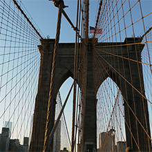

Just a tourist in NYC
Just a tourist in NYC
Travel Blog
Being a tourist in a big city like NYC, everything is new and every area is full of people and energy. Some situations along with my travel came out just unexpectedly and funny -
Situation One -
In a museum I was struggling to find food like a mouse because of my whole day’s full schedule. Reluctantly buying an unreasonable expensive meal to fill my gut I felt trapped in the tourist place. The only tastable food in the plate was the corn, but when I appreciated how good and how lonely the corn was along with the other food, the poor thing felt down to the floor. Looking at the whole meal that I didn’t wanna put in, at the moment I totally got what Perry felt In Cold Blood (a book).Situation Two -
In every strange new place my phone is my surviving director. While I was lowering my head, navigating through my phone on the street, there were several times people approached me and asked me for directions. I was mumbling like “I don’t know. I’m a tourist (like you)..”. The chances I getting someone ask for direction was relatively high, which gamblers would like to be in my place. Hi tourists, can you see a big “lost” word on my forehead？Situation Three -
Going to McDonald is another quick way to solve my hunger problem in a strange city by myself. Coming in one of the biggest franchise, I asked for a dollar meal called McChicken, which I consider the best food in McDonald, and the cashier was showing her face like the painting “Scream”. Being silent for a while, “we don’t have dollar meal.” she said with her face was like “are your from a third world country?” Reluctantly I picked other meal and my feedback for the fast food sandwich was like the face the cashier had.Conclusion -
The four days’ trip in NYC was tight and exciting. Finding each new tourist place in the city wasn’t as difficult as what I had expected. I didn’t get lost once and could always find my way to my destinations with my surviving GPS phone (unless it’s dead). If this were a game I would like to reset the difficulty setting to a higher level because I felt like I was in an easy mode with every tasks I had assigned I could finished on time in a day.Rather than that it was fun especially raining in the first day and I was wandering in a big city by myself. What I really want to say is traveling by oneself is not as terrible as some people think it might be, but in the opposite it’s fun like entering a game and playing by yourself with all the supplement you have or you will get for a new environment. It’s full of excitement because you know you are in a new place and everything you see is the thing you haven’t seen before. In addition you are the decision maker of picking which way to go and choosing your own destiny.
I have to admit, I was just a tourist in a big city, brought all my belongs to start my new journey. And when I found the giant Metropolitan Museum of Art, I was excited to run up like a kid and started to explore like I found a huge alive thing in a strange island.
"Must Go" List
- Metropolitan Museum of Art
- Brooklyn Bridge
- High line
- MoMA
- Guggenheim Museum
- Museum of Natural Hisotry
- Central Park
Like US in social media!
Day 1:
Statue of Liberty

"The Statue of Liberty Enlightening the World" was a gift of friendship from the people of France to the United States and is recognized as a universal symbol of freedom and democracy. The Statue of Liberty was dedicated on October 28, 1886.
Day 2:
High Line

The High Line is a public park built on a historic freight rail line elevated above the streets on Manhattan’s West Side. It runs from Gansevoort Street in the Meatpacking District to West 34th Street, between 10th and 12th Avenues.
Day 3:
Art Museums
There are many famous art museums in NYC such as The Metropolitan Museum of Art, Museum of Modern Art, and Guggenheim Museum. They are all individually different. Each has lots of styles of beautiful arts and paintings.
Day 4:
Brooklyn Bridge

The Brooklyn Bridge lays over NYC’s East River, linking Manhattan and Brooklyn. Since 1883, its granite towers and steel cables have offered a safe and scenic passage to millions of commuters and tourists, trains, bicycles, and cars.